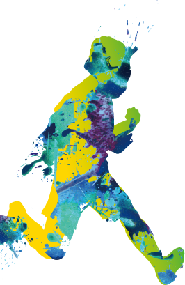
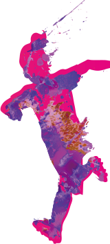
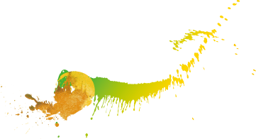

足動傳愛 前進歐洲



安聯集團 (Allianz Group) 於全球各地支持最具凝聚力的運動 ─ 足球，不但於全球六大洲冠名贊助安聯足球場 (Allianz Arena)，也是歐洲足球聯賽勁旅－慕尼黑拜仁球隊(FC Bayern München) 的忠實夥伴，每年更舉辦青少年足球營等活動，讓全球各地的小朋友，都有機會體驗足球魅力。
承襲集團”Understand. Act.”的主動精神，安聯投信深耕台灣，支持在地環保、文創與教育，今年更舉辦「足動傳愛 前進歐洲」公益嘉年華，主動讓這塊土地更美好。
2014年，歐洲勁旅─德國隊拿下了世界盃足球賽的冠軍，想知道他們的獲勝關鍵？邀請您帶孩子來當一天小足球員，闖關體驗德國隊的精彩球風，還有精美贈品等你來拿！
台灣的偏鄉有一群堅持努力的小足球員，有極高的天分，卻長期缺乏資源。只要您前來闖關，安聯投信就捐出10元給花蓮化仁國中足球隊，讓主動的孩子往足球夢更近一步！
安聯投信今年舉辦 Art In Your Life 「主動繪出藝術人生」亞太區青少年設計大賽，讓世界看到台灣年輕人的創作與才華!邀請您與活動大使吳尊，一同欣賞台灣、香港、新加坡等地的精彩創意，也看見足球與藝術交集出的精彩火花！
來自德國的主動式基金專家安聯投信 (Allianz Global Investors)，隸屬於百年金融巨擘-安聯集團 (Allianz Group) 。安聯集團創立於1890年，總部位於德國慕尼黑，橫跨歐洲、亞洲及美洲等地，於全球70多個重要國家設立金融服務據點，提供超過8500萬名客戶從保險到資產管理等全方位金融服務，所管理資產高達1.8兆歐元，是全球金融服務集團之領導品牌。
在資產管理服務，我們運用主動式投資策略，一路走來秉持”Understand. Act.” 企業理念，堅持凡事須盡力地、全然客觀地了解全貌，唯有主動深入研究，才能精準掌握投資脈動；並藉由經理人選股與控制風險能力，因應環境靈活調整，方能為投資人創造超越市場表現的機會。
自1990年跨足台灣市場以來，陸續引進集團旗下安聯環球投資-盧森堡系列、安聯環球投資-德國系列以及PIMCO系列等境外基金，為將全球資源優勢成功移轉至台灣，更於1999年成立安聯投信，迄今不但成為國內最大的組合基金與產業基金公司，亦榮獲多項大獎加冕，包括三度蟬聯亞洲資產管理雜誌最佳退休資產管理公司獎，並於2015、2016年接連拿下Smart智富台灣基金獎最佳股票研究團隊與最佳債券研究團隊獎殊榮，成為第一家拿下雙冠榮耀的外商投信。